3D-viewer
Versie: 0.03
Auteur: Adrian Voogd
Datum: 22 november 2024
Functie: Hoofdfunctionaliteit
Inleiding
- De 3D-viewer is de hoofdfunctionaliteit van Netherlands3D.eu. De interface biedt toegang tot de verschillende functionaliteiten. De 3D-viewer wordt geactiveerd na het klikken op Bekijk de viewer op de homepage in de Headline.
- Dit hoofdstuk beschrijft de belangrijkste functionaliteiten van de 3D-viewer en de instellingen.
Overzicht van functionaliteiten
- De 3D-viewer is de hoofdfunctionaliteit van Netherlands3D.eu. Met behulp van verschillende functionaliteiten worden databronnen gekoppeld en in real-time interactief gevisualiseerd.
Gedetailleerde beschrijving van de functionaliteiten
Instellingen
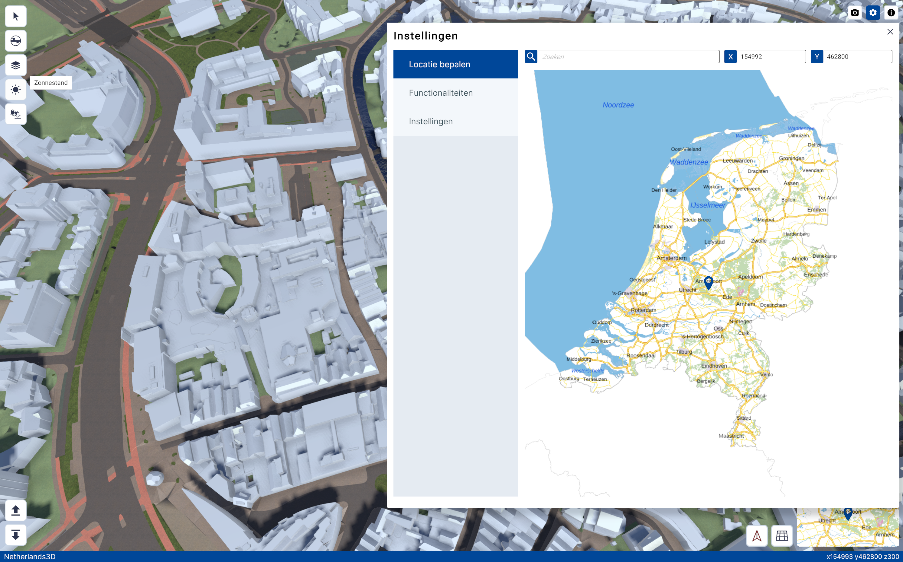
3D-Viewer startschermNa het opstarten van de 3D viewer is het instellingen menu actief. Het instellingenmenu is onderverdeeld in drie functies;
1. Locatie bepalen
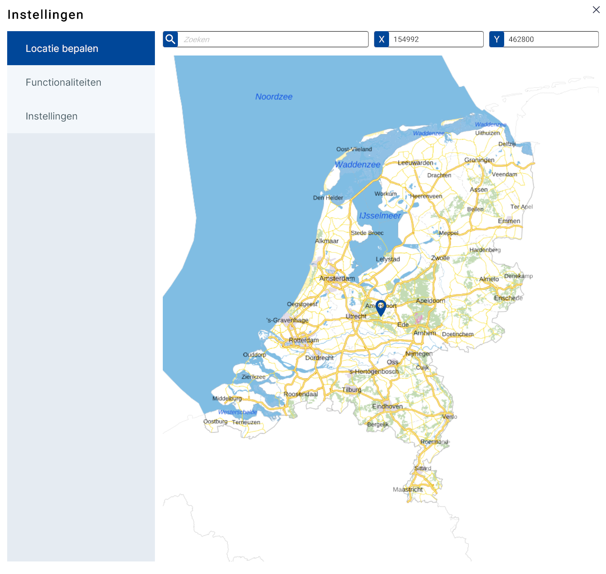
Locatie bepalen - submenuMet deze functie wordt de locatie ingevoerd. Dit kan op drie manieren;
1. Door met de muis op een locatie in de map te klikken.
2. Door het invoeren van een plaats-, straatnaam en/of postcode.
3. Door bij X, Y een coördinaat* in te voeren.
(*) Het coördinatenstelsel is gebaseerd RD-coördinatenstelsel.
2. Functionaliteiten
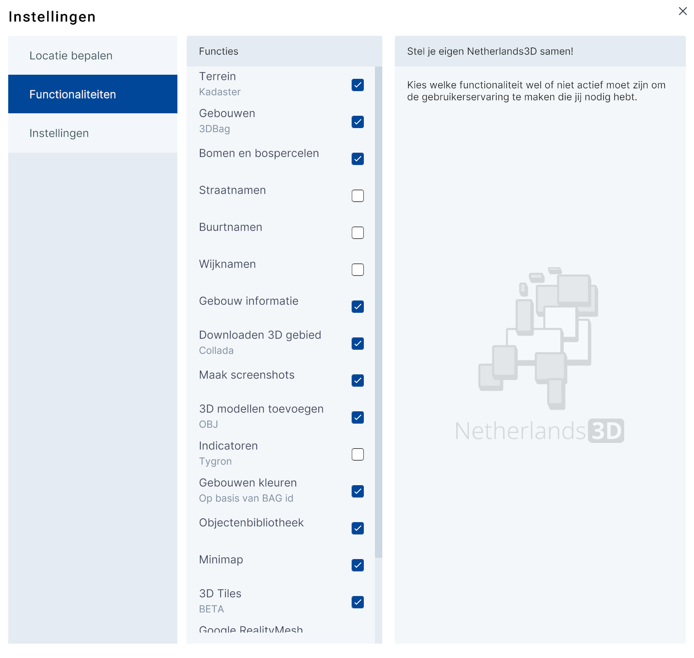
Functionaliteiten - submenuMet het submenu Functionaliteiten krijgt de gebruiker toegang tot het aan-/uitzetten van de standaard datalagen en (menu)functionaliteiten die in de basis versie van Netherlands3d.eu wordt aangeboden.
Door het aanklikken van het selectievinkje wordt de laag of functionaliteit aan of uitgezet.
In het hoofdstuk Bijlagen van dit document staat een overzicht van de datalagen en bijbehorende (gekoppelde) functionaliteiten.
3. Instellingen (submenu)
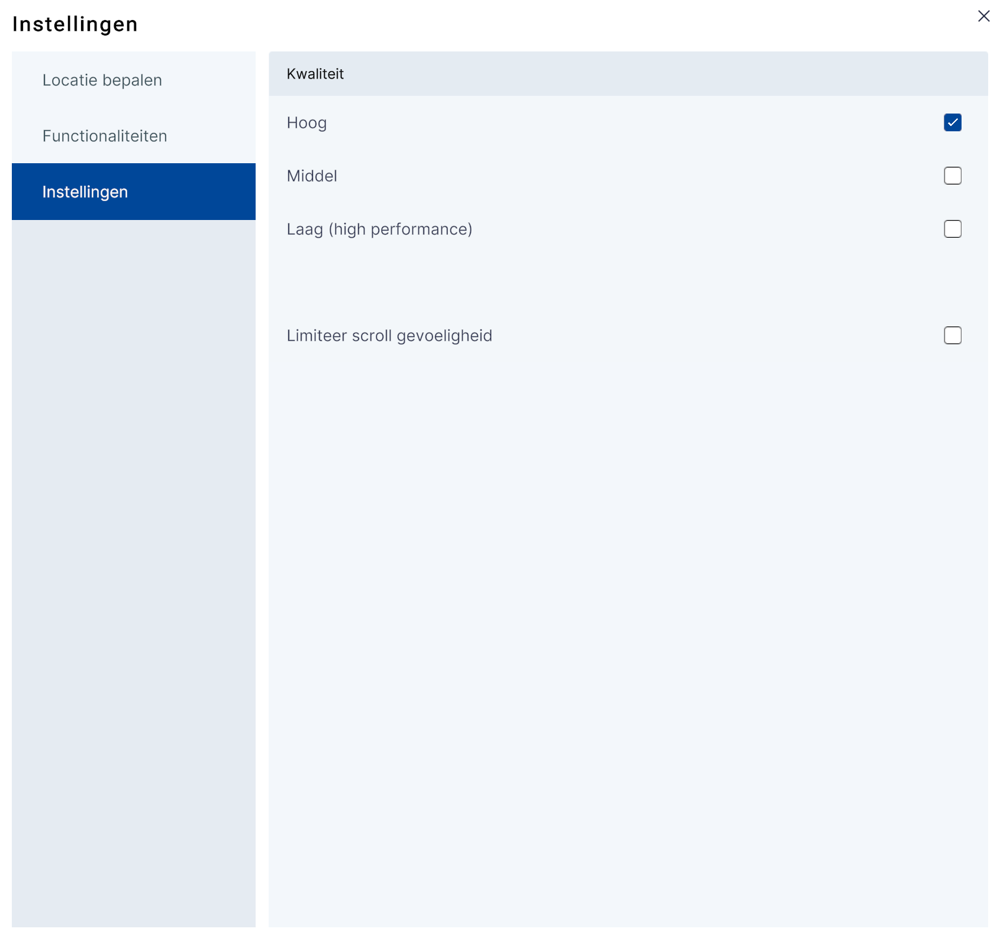
Instellingen - submenu(beeld)Kwaliteit
In dit menu kan de performance van de 3D viewer worden geoptimaliseerd en afgestemd op de capaciteit van het gebruikte computersysteem. Door te kiezen voor Hoog, Middel of Laag, kan de (beeld)kwaliteit worden aangepast van resp. Hoge, Middelmatige of lage kwaliteit. De optie laag biedt de snelste performance maar heeft het minste detailniveau.
Limiteer scroll gevoeligheid
In sommige gevallen reageert de 3D-viewer niet optimaal op de muisbewegingen va de gebruiker. Door de optie Limiteer scroll gevoeligheid aan te vinken kan dit worden verbeterd.
Met x (rechtsboven) wordt het instellingenmenu afgesloten en toont de 3D-viewer het [default] startpunt; het centrum van Amersfoort.
3D-viewer
 3D-Viewer hoofdscherm
3D-Viewer hoofdscherm
1. Interface
De interface is onderverdeeld in het 3D-scherm met daaromheen de knoppen van de interface;
1. Hoofdmenu – linksboven,
2. Project openen/project opslaan - linksonder,
3. Bovenbalk – rechtsboven,
4. Onderbalk - rechtsonder.
 3D-Viewer interface
3D-Viewer interface
Menu 1. Hoofdmenu (linksboven)
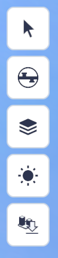
Het hoofdmenu (linksboven) bevat de volgende functies (van boven naar onder);
- Bag informatie,
- Ondergrond doorzicht,
- Lagen,
- Zonnestand,
- Gebied downloaden.
Menu 2. Project openen/project opslaan (linksonder)
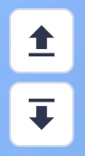
Het Project opslaan/openen-menu bevindt zich in de linker onder hoek en bevat de volgende functies;
- Project openen,
- Project opslaan.
Met Project opslaan worden alle nieuwe instellingen, locatie, lagen etc. van de viewer opgeslagen. Met de knop Project opslaan wordt een venster geopend met aanvullende uitleg en de knop Bestand opslaan.
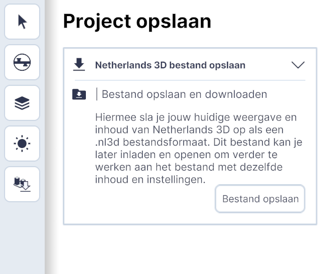
Met de knop Bestand opslaan worden de instellingen automatisch in een .nl3d bestand gedownload in de C:\Users\Gebruikersnaam\Downloads.
Met de knop Project openen wordt een venster geopend met aanvullende uitleg en de knop Bestand openen. Hiermee wordt de verkenner/finder (?) geopend en kan een eerder gemaakt .nl3d-bestand worden geopend. Hierna zijn de in-het-.nl3d-bestand-opgeslagen instellingen, datalagen, locatie etc. weer actief.
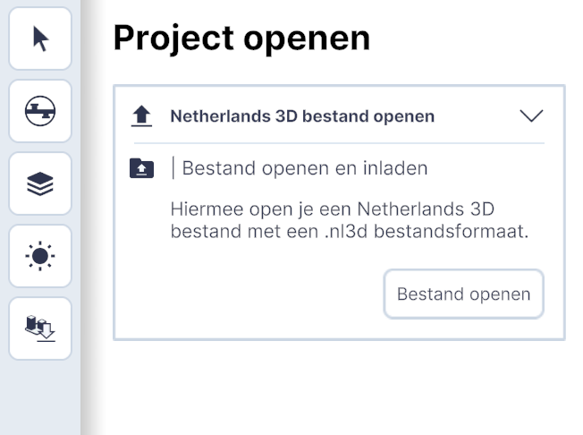
Menu 3. Bovenbalk(rechtsboven)

De bovenbalk bevat de volgende functies (van links naar rechts);
Schermafbeelding maken
Door op de knop Schermafbeelding maken te klikken wordt automatisch een afdruk van de 3D viewer als .png-bestand gedownload. Je kunt de afbeelding bekijken door naar C:\Users\Gebruikersnaam\Downloads te gaan.
Instellingen
Zie Instellingen
Informatie
Met de knop Informatie wordt de Homepage in een apart browser-venster geopend.
Menu 4. Navigeren(rechtsonder)

Het menu bevat de volgende functies:
 Weergave naar noorden draaien
Weergave naar noorden draaien
Met de knop wordt de kijkrichting automatisch naar het noorden gericht.
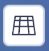
Wissel tussen orthografisch/perspectiefMet de knop wordt de kijkrichting automatisch gewijzigd in loodrecht naar beneden en zonder perspectief. Na het opnieuw indrukken wordt het beeld (terug) veranderd in de oorspronkelijke toestand.
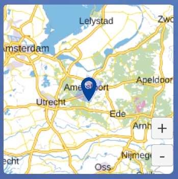
Mini-map
De minimap is de kleine versie van de map bij instellingen zie 2. Instellingen Door met de muis over de minimap te bewegen wordt deze groter.
Door op een locatie in de minimap te klikken wordt in de 3D viewer bijbehorende locatie weergegeven.
Met de knoppen +/- kan worden in-/uitgezoomd.
Positie indicatie
In de blauwe onderbalk van de viewer staan (rechts) de coördinaten van de positie van de viewer.
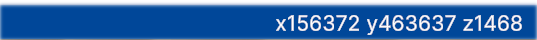
2. 3D-viewer scherm
Het scherm toont de locatie die in het instellingenmenu is ingevoerd of – als er geen invoer is gedaan - de default-locatie (centrum Amersfoort). Het beeld is in perspectief, onder een lichte hoek en vanaf een hoogte van 300 meter.
Bediening van het scherm
Met behulp van de muis al dan niet in combinatie met muisknoppen en/of toetsenbordknoppen kan men door de 3D wereld in de viewer navigeren.
Dit kan op verschillende manieren;
[Scroll/Zoom] Door met het muiswiel te draaien kan de kijker naar voren of naar achteren bewegen in de kijkrichting.
[Panning] Door met de muis én de ingedrukte linkermuisknop over het scherm omhoog of omlaag of naar links of naar rechts te bewegen, kan de kijker zich resp. omhoog of omlaag of resp. naar links of naar rechts in de 3D wereld verplaatsen.
[Orbit 1] Door met de muis en de ingedrukte middelste muisknop over het scherm te bewegen, kan de kijker om het kijkpunt heen draaien. Alternatief; Dit kan ook met de linkermuisknop in combinatie met de alt-toets.
[Orbit 2] Door met de muis en de ingedrukte linkermuisknop in combinatie met de ctrl-toets over het scherm te bewegen, kan de kijker de kijkhoek